Cuando hayamos terminado este tema, seremos capaces de:
- Introducir los conceptos fundamentales de la regresión lineal múltiple.
- Aprender a interpretar los coeficientes de regresión en un modelo de regresión lineal múltiple.
- Desarrollar habilidades para construir y evaluar modelos de regresión lineal múltiple utilizando R.
- Identificar y manejar problemas comunes en la regresión lineal múltiple, como la multicolinealidad y los valores atípicos.
3.1 INTRODUCCIÓN
Recuerda que la estadística descriptiva es una rama de la estadística que permite describir los datos que tienes a mano. La estadística inferencial (con las populares pruebas de hipótesis) y los intervalos de confianza) es otra rama que permite hacer inferencias, es decir, sacar conclusiones sobre una población a partir de una muestra.
La última rama de la estadística trata sobre modelar la relación entre dos o más variables. Algunos ven el análisis de regresión como parte de la estadística inferencial. Es cierto, ya que se toma una muestra para evaluar la relación entre variables en una población. Tiendo a distinguir la regresión de la estadística inferencial porque (i) las regresiones se usan de forma más amplia (para análisis predictivos, entre otros), y porque (ii) el objetivo principal de la regresión lineal difiere de los objetivos de los intervalos de confianza y las pruebas de hipótesis.] La herramienta estadística más común para describir y evaluar el vínculo entre variables es la regresión lineal.
Existen dos tipos de regresión lineal:
Regresión lineal simple: es un enfoque estadístico que permite evaluar la relación lineal entre dos variables cuantitativas. Más precisamente, permite cuantificar la relación y evaluar su significancia.
Regresión lineal múltiple: es una generalización de la regresión lineal simple, en el sentido de que permite evaluar las relaciones lineales entre una variable de respuesta (cuantitativa) y varias variables explicativas (cuantitativas o cualitativas).
En el mundo real, la regresión lineal múltiple se utiliza con más frecuencia que la simple. Esto se debe principalmente a que:
La regresión lineal múltiple permite evaluar la relación entre dos variables, controlando el efecto de otras variables.
Con la creciente facilidad para recopilar datos, se pueden incluir y tener en cuenta más variables al analizar los datos.
Antes de sumergirnos en la regresión lineal múltiple, repasemos brevemente la regresión lineal simple.
3.1.1 Regresión lineal simple: recordatorio
La regresión lineal simple es un procedimiento estadístico en el que:
Una de las variables se considera la respuesta o variable a explicar. También se llama variable dependiente y se representa en el eje \(Y\).
La otra variable es la explicativa o también llamada variable independiente, y se representa en el eje \(X\).
La regresión lineal simple permite evaluar la existencia de una relación lineal entre dos variables y cuantificar este vínculo.
Lo que hace de la regresión lineal una herramienta estadística poderosa es que permite cuantificar en qué medida varía la variable dependiente cuando la variable independiente aumenta en una unidad.
Este concepto es clave y ayuda a responder preguntas como:
¿Hay una relación entre el índice de masa corporal (IMC) y la presión arterial de un paciente?
¿Afecta la dosis de un medicamento al tiempo de recuperación?
¿Un aumento en las horas de ejercicio semanales reduce los niveles de colesterol?
Por ejemplo, imaginemos que nos interesa evaluar si existe una relación lineal entre la presión arterial sistólica de un paciente y su índice de masa corporal (IMC). Para este ejemplo, usaremos un conjunto de datos simulado de pacientes.
El conjunto de datos incluye las siguientes variables para 100 pacientes:
presion_sistolica: Presión arterial sistólica (en mmHg).
edad: Edad del paciente (en años).
imc: Índice de Masa Corporal (en kg/m²).
tabaquismo: Estado de tabaquismo del paciente (Fumador/No fumador).
3.1.2 Creamos un conjunto de datos médicos simulados para el ejemplo
# Fijamos la semilla para reproducibilidadset.seed(42)n <-100# número de pacientesedad <-round(runif(n, 30, 70))imc <-round(rnorm(n, mean =28, sd =4), 1)# Convertimos el tabaquismo en una variable categórica (factor)tabaquismo <-factor(sample(c("No fumador", "Fumador"), n, replace =TRUE, prob =c(0.7, 0.3)))# Creamos la presión sistólica basada en las otras variables + ruido aleatorioerror <-rnorm(n, mean =0, sd =8)presion_sistolica <-round(60+0.8* edad +1.5* imc +ifelse(tabaquismo =="Fumador", 5, 0) + error)# Creamos el dataframedatos_pacientes <-data.frame( presion_sistolica, edad, imc, tabaquismo)# Vemos las primeras filas del conjunto de datosdat <- datos_pacientesprint(head(dat))
presion_sistolica edad imc tabaquismo
1 142 67 29.3 No fumador
2 154 67 24.9 No fumador
3 154 41 34.3 No fumador
4 173 63 30.6 No fumador
5 141 56 28.4 Fumador
6 140 51 29.1 Fumador
# Visualizamos los datoslibrary(ggplot2)ggplot(dat, aes(x = imc, y = presion_sistolica)) +geom_point() +labs(y ="Presión arterial sistólica (mmHg)",x ="Índice de Masa Corporal (IMC)" ) +theme_minimal()
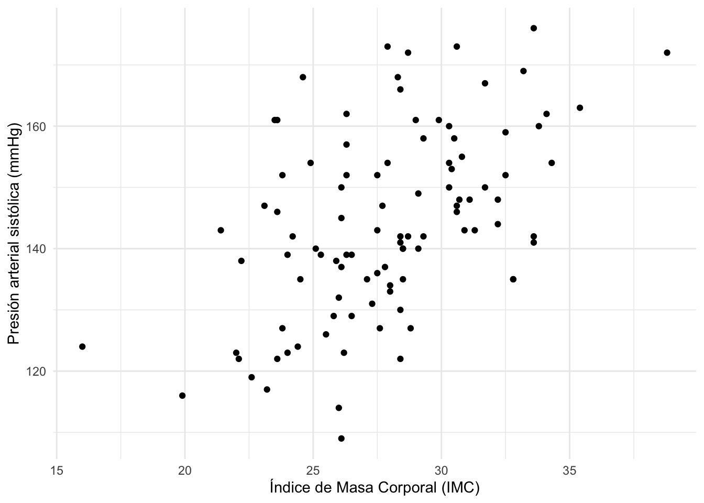
El diagrama de dispersión anterior muestra que parece haber una relación positiva entre la presión arterial sistólica y el IMC. Esto tiene sentido clínico, ya que un mayor IMC a menudo se asocia con una presión arterial más alta.
Esto ya es una buena visión general, pero una regresión lineal simple va más allá. Nos dirá en cuántos mmHg varía la presión arterial, en promedio, cuando el IMC varía en una unidad (1 kg/m²). Esto es posible gracias al ajuste de la línea de regresión mediante el método de mínimos cuadrados.
El principio de la regresión lineal simple es encontrar la línea (es decir, determinar su ecuación) que pasa lo más cerca posible de las observaciones. Para encontrar la línea que mejor se ajusta, se utiliza el método de mínimos cuadrados. Este método minimiza la suma de las distancias verticales al cuadrado entre cada punto de datos y la línea de regresión. Estas distancias se denominan residuos del modelo.
El modelo de regresión se puede escribir como:
\[Y = \beta_0 + \beta_1 X + \epsilon\]
donde:
\(Y\) es la variable dependiente (presión arterial sistólica).
\(X\) es la variable independiente (IMC).
\(\beta_0\) es la ordenada en el origen o intercepto (el valor medio de \(Y\) cuando \(X=0\)).
\(\beta_1\) es la pendiente (el aumento esperado en \(Y\) cuando \(X\) aumenta en una unidad).
\(\epsilon\) son los residuos (el término de error).
Al ajustar el modelo, estimamos los parámetros desconocidos \(\beta_0\) y \(\beta_1\) a partir de los datos. Estos estimados se denotan como \(\widehat\beta_0\) y \(\widehat\beta_1\).
Los coeficientes \(\widehat\beta\) se interpretan de la siguiente manera:
La ordenada en el origen \(\widehat\beta_0\) es el valor medio de la variable dependiente \(Y\) cuando la variable independiente \(X\) es 0.
La pendiente \(\widehat\beta_1\) corresponde a la variación esperada de \(Y\) cuando \(X\) varía en una unidad. Nos dice dos cosas:
El signo de la pendiente indica la dirección de la relación. Una pendiente positiva (\(\widehat\beta_1 > 0\)) indica una relación positiva (las variables varían en la misma dirección). Una pendiente negativa (\(\widehat\beta_1 < 0\)) indica una relación negativa.
El valor de la pendiente proporciona información sobre la magnitud del cambio.
Las formulas usadas por el método de minimos cuadrados para calcular los coeficientes son: \[\widehat\beta_1 = \frac{\sum\_{i=1}^{n} (X_i - \overline{X})(Y_i - \overline{Y})}{\sum_{i=1}^{n} (X_i - \overline{X})^2}\]\[\widehat\beta_0 = \overline{Y} - \widehat\beta_1 \overline{X}\] donde \(\overline{X}\) y \(\overline{Y}\) son las medias muestrales de \(X\) e \(Y\), respectivamente. Una vez que tenemos los coeficientes, podemos escribir la ecuación de la línea de regresión ajustada: \[\widehat{Y} = \widehat\beta_0 + \widehat\beta_1 X\] donde \(\widehat{Y}\) es el valor predicho de \(Y\) para un valor dado de \(X\).
Para realizar una regresión lineal en R, usamos la función lm() (modelo lineal).
Aplicado a nuestro ejemplo de presión arterial e IMC:
modelo_simple <-lm(presion_sistolica ~ imc, data = dat)
La función summary() nos da los resultados del modelo:
options(scipen =999) # para evitar notación científicasummary(modelo_simple)
Call:
lm(formula = presion_sistolica ~ imc, data = dat)
Residuals:
Min 1Q Median 3Q Max
-31.343 -9.261 -1.945 8.978 30.769
Coefficients:
Estimate Std. Error t value Pr(>|t|)
(Intercept) 86.1928 9.9304 8.68 0.0000000000000881 ***
imc 2.0747 0.3528 5.88 0.0000000567768822 ***
---
Signif. codes: 0 '***' 0.001 '**' 0.01 '*' 0.05 '.' 0.1 ' ' 1
Residual standard error: 13.07 on 98 degrees of freedom
Multiple R-squared: 0.2608, Adjusted R-squared: 0.2533
F-statistic: 34.58 on 1 and 98 DF, p-value: 0.00000005678
Los resultados (columna Estimate) se pueden resumir así:
El intercepto \(\widehat\beta_0 = 86.19\) indica que, para un paciente hipotético con un IMC de 0 kg/\(m^2\), esperaríamos una presión sistólica promedio de 86.19 mmHg. Esta interpretación no tiene sentido clínico, ya que un IMC de 0 es imposible (en este caso sería relevante centrar la variable IMC para que la interpretación del intercepto sea con respecto a la media del IMC. Para centrar la variable IMC, podemos restar la media del IMC a cada valor de IMC antes de ajustar el modelo).
La pendiente \(\widehat\beta_1 = 2.07\) indica que:
Existe una relación positiva entre el IMC y la presión arterial sistólica (como se esperaba por el gráfico).
Más importante aún, una pendiente de 2.07 significa que, por un aumento de una unidad en el IMC (1 kg/\(m^2\)), la presión arterial sistólica aumenta, en promedio, en 2.07 mmHg.
Otra interpretación útil del intercepto es cuando la variable independiente está centrada en torno a su media. En este caso, el intercepto se interpreta como el valor medio de \(Y\) para los individuos que tienen un valor de \(X\) igual a la media de \(X\). Veámoslo en la práctica:
Primero centramos la variable IMC en torno a la media y luego volvemos a ejecutar un modelo lineal simple con esta nueva variable:
Call:
lm(formula = presion_sistolica ~ imc_centered, data = dat_centered)
Residuals:
Min 1Q Median 3Q Max
-31.343 -9.261 -1.945 8.978 30.769
Coefficients:
Estimate Std. Error t value Pr(>|t|)
(Intercept) 144.0800 1.3072 110.22 < 0.0000000000000002 ***
imc_centered 2.0747 0.3528 5.88 0.0000000568 ***
---
Signif. codes: 0 '***' 0.001 '**' 0.01 '*' 0.05 '.' 0.1 ' ' 1
Residual standard error: 13.07 on 98 degrees of freedom
Multiple R-squared: 0.2608, Adjusted R-squared: 0.2533
F-statistic: 34.58 on 1 and 98 DF, p-value: 0.00000005678
Basándonos en los resultados, vemos que:
La pendiente no ha cambiado, la interpretación es la misma que sin el centrado (lo que tiene sentido, ya que la línea de regresión simplemente se ha desplazado a la derecha o a la izquierda).
Más importante aún, el intercepto es ahora \(\widehat\beta_0 =\) 144.8, por lo que podemos esperar para un paciente hipotético con un IMC medio de 27.9 kg/\(m^2\), esperaríamos una presión sistólica promedio de 144.8 mmHg.
round(coef(mod_centered)[1], 2)
(Intercept)
144.08
mean(dat$imc)
[1] 27.901
Este centrado alrededor de la media para una variable independiente es particularmente interesante:
cuando la variable independiente continua no tiene una interpretación clínica con un valor de cero, o
cuando es importante interpretar el intercepto.
Hay que tener en cuenta que el centrado no tiene por qué hacerse solo en torno a la media. La variable independiente también puede centrarse en algún valor que esté realmente en el rango de los datos. El valor exacto en el que se centre no importa siempre que sea significativo y esté dentro del rango de los datos. En otro caso, podríamos encontrar que elegir el valor más bajo o el más alto del peso es la mejor opción. Así que nos toca a nosotros decidir el peso en el que es más significativo interpretar el intercepto.
Como se mencionó anteriormente, el valor de la pendiente no permite, por sí solo, evaluar la significancia de la relación lineal.
En otras palabras, una pendiente distinta de 0 no significa necesariamente que sea significativamente distinta de 0, por lo que no significa que exista una relación significativa entre las dos variables en la población. Podría haber una pendiente de 10 que no sea significativa, y una pendiente de 2 que sí lo sea.
La significancia de la relación también depende de la variabilidad de la pendiente, que se mide por su error estándar y generalmente se anota como \(se(\widehat\beta_1)\).
Sin entrar en demasiados detalles, para evaluar la significancia de la relación lineal, dividimos la pendiente por su error estándar. Esta relación es el estadístico de prueba y sigue una distribución t de Student con \(n - 2\) grados de libertad: [\(n\) es el número de observaciones.]
\[T_{n - 2} = \frac{\widehat\beta_1}{se(\widehat\beta_1)}\] Para una prueba bilateral, las hipótesis nula y alternativa son:
\(H\_0 : \beta_1 = 0\) (no hay relación (lineal) entre las dos variables)
\(H\_1 : \beta_1 \ne 0\) (hay una relación (lineal) entre las dos variables)
A grandes rasgos, si esta relación es mayor que 2 en valor absoluto, entonces la pendiente es significativamente diferente de 0 y, por lo tanto, la relación entre las dos variables es significativa (y en ese caso es positiva o negativa dependiendo del signo de la estimación \(\widehat\beta_1\)).
El error estándar y el estadístico de prueba se muestran en la columna Std. Error y t value en la tabla Coefficients.
Afortunadamente, R nos da una forma más precisa y fácil de evaluar la significancia de la relación. La información se proporciona en la columna Pr(>|t|) de la tabla Coefficients. Este es el p-valor de la prueba. Como en cualquier prueba estadística, si el p-valor es mayor o igual que el nivel de significancia (normalmente \(\alpha = 0.05\)), no rechazamos la hipótesis nula, y si el p-valor es menor que el nivel de significancia, rechazamos la hipótesis nula.
Si no rechazamos la hipótesis nula, no rechazamos la hipótesis de que no hay relación entre las dos variables (porque no rechazamos la hipótesis de una pendiente de 0). Por el contrario, si rechazamos la hipótesis nula de no relación, podemos concluir que existe una relación lineal significativa entre las dos variables.
En nuestro ejemplo, el p-valor = < 0.0001, por lo que rechazamos la hipótesis nula al nivel de significancia \(\alpha = 5%\). Por lo tanto, concluimos que existe una relación significativa entre el IMC y la preson arterial sistólica.
Consejo: Para asegurarme de que solo interpreto los parámetros que son significativos, tiendo a comprobar primero la significancia de los parámetros gracias a los p-valores, y luego interpreto las estimaciones en consecuencia. Para completar, ten en cuenta que la prueba también se realiza sobre el intercepto. Siendo el p-valor menor que 0.05, también concluimos que el intercepto es significativamente diferente de 0.
Es importante remarcar que una relación significativa entre dos variables no significa necesariamente que haya una influencia de una variable sobre la otra o que haya un efecto causal entre estas dos variables. Una relación significativa entre \(X\) e \(Y\) puede aparecer en varios casos:
\(X\) causa \(Y\)
\(Y\) causa \(X\)
una tercera variable causa \(X\) e \(Y\)
una combinación de estas tres razones
Un modelo estadístico por sí solo no puede establecer un vínculo causal entre dos variables. Demostrar la causalidad entre dos variables es más complejo y requiere, entre otras cosas, un diseño experimental específico, la repetibilidad de los resultados a lo largo del tiempo, así como varias muestras.
Esta es la razón por la que a menudo leerás “Correlación no implica causalidad” y la regresión lineal sigue el mismo principio.
Desafortunadamente, la regresión lineal no se puede utilizar en todas las situaciones. Además del requisito de que la variable dependiente debe ser una variable cuantitativa continua, la regresión lineal simple requiere que los datos satisfagan las siguientes condiciones:
Linealidad: La relación entre las dos variables debe ser lineal (al menos aproximadamente). Por esta razón, siempre es necesario representar gráficamente los datos con un diagrama de dispersión antes de realizar una regresión lineal simple. Ten en cuenta que la linealidad se puede comprobar con un diagrama de dispersión de las dos variables, o mediante un diagrama de dispersión de los residuos y los valores ajustados. Si la relación no es lineal, la regresión lineal no es adecuada y se deben considerar otros tipos de modelos (por ejemplo, regresión polinómica, regresión no lineal, etc.). A continuación se muestran dos ejemplos: uno en el que la linealidad se respeta y otro en el que no se respeta.
library(MASS)set.seed(42)sigma <-rbind(c(0.8,-0.8,-0.5), c(-0.8,1, 0.7), c(-0.7,0.8,1))# crear el vector de mediasmu<-c(10, 5, 2)# generar la distribución normal multivariantedf<-as.data.frame(mvrnorm(n=200, mu=mu, Sigma=sigma))p1 <-ggplot(df, aes(x=V1, y=V2))+geom_point()+geom_smooth(method="lm", se=FALSE)+labs(x ="X",y ="Y",title ="Se respeta la linealidad") +theme_minimal()p <-0.5q <-seq(from=0, to=20, by=0.1)y <-500+0.4* (q-10)^3noise <-rnorm(length(q), mean=10, sd=50)noisy.y <- y + noisedf <-data.frame(q = q,y = y)p2 <-ggplot(df, aes(x=q, y=noisy.y))+geom_point()+geom_smooth(se=FALSE)+labs(x ="X",y ="Y",title =expression(paste("La linealidad ", bold("no"), " se respeta"))) +theme_minimal()library(patchwork)p1 + p2
Independencia: Las observaciones deben ser independientes. Es el plan de muestreo y el diseño experimental lo que suele proporcionar información sobre esta condición. Si los datos proceden de diferentes individuos o unidades experimentales, suelen ser independientes. Por otro lado, si los mismos individuos se miden en diferentes períodos, los datos probablemente no sean independientes.
Normalidad de los residuos: Para tamaños de muestra grandes, los intervalos de confianza y las pruebas sobre los coeficientes son (aproximadamente) válidos tanto si el error sigue una distribución normal como si no (una consecuencia del teorema del límite central, consulta más en [1] regression y [2]. Para tamaños de muestra pequeños, los residuos deben seguir una distribución normal. Esta condición se puede probar visualmente (mediante un gráfico Q-Q y/o un histograma), o más formalmente (mediante la prueba de Shapiro-Wilk, por ejemplo).
# gráfico Q-Qplot(modelo_simple, which =2)
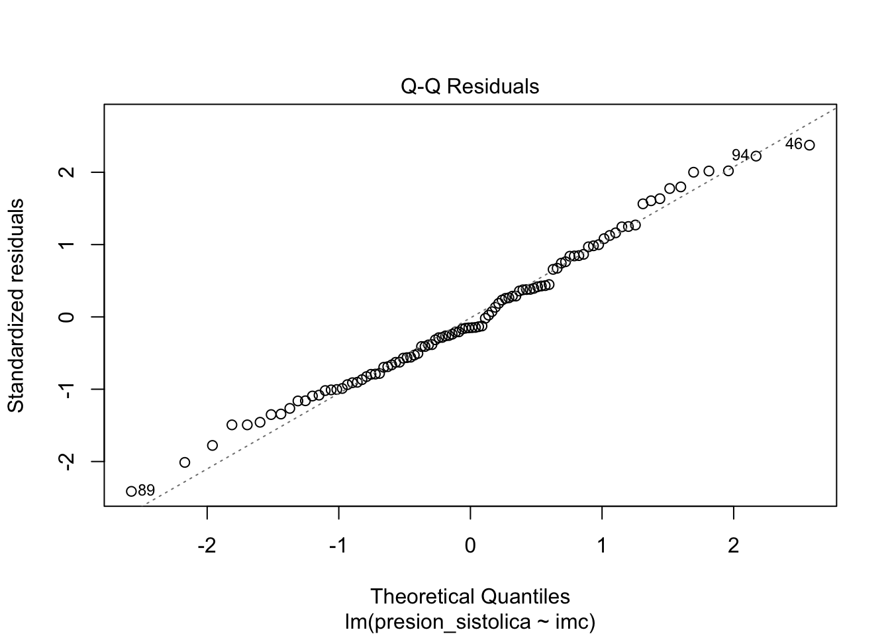
# histograma de los residuoshist(residuals(modelo_simple), main ="Histograma de los residuos",xlab ="Residuos", breaks =10)
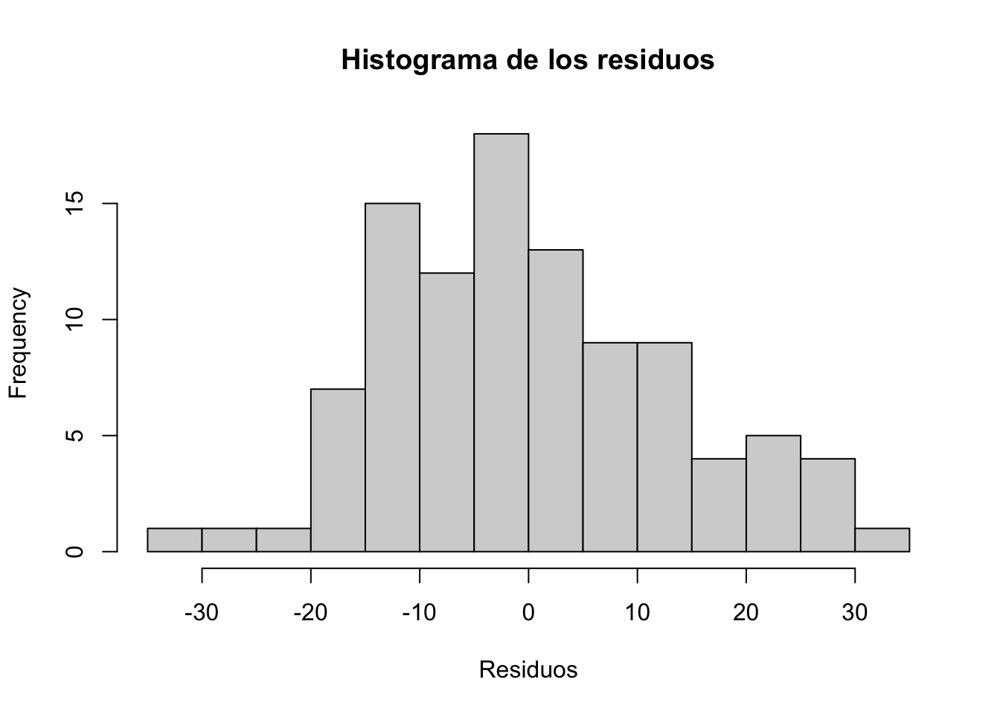
# prueba de Shapiro-Wilkshapiro.test(residuals(modelo_simple))
Shapiro-Wilk normality test
data: residuals(modelo_simple)
W = 0.98518, p-value = 0.327
Homocedasticidad de los residuos: La varianza de los errores debe ser constante. Hay una falta de homocedasticidad cuando la dispersión de los residuos aumenta con los valores predichos (valores ajustados). Esta condición se puede probar visualmente (trazando los residuos estandarizados frente a los valores ajustados) o más formalmente (mediante la prueba de Breusch-Pagan).
# gráfico de residuos estandarizados frente a los valores ajustadosplot(modelo_simple, which =1)
# prueba de Breusch-Pagan# instalar el paquete si no está ya instalado# install.packages("lmtest")library(lmtest)
Loading required package: zoo
Attaching package: 'zoo'
The following objects are masked from 'package:base':
as.Date, as.Date.numeric
bptest(modelo_simple)
studentized Breusch-Pagan test
data: modelo_simple
BP = 1.6674, df = 1, p-value = 0.1966
Sin puntos influyentes: Si los datos contienen valores atípicos, es esencial identificarlos para que no influyan, por sí solos, en los resultados de la regresión. Ten en cuenta que un valor atípico no es un problema per se si el punto está en la alineación de la línea de regresión, por ejemplo, porque no influye en la línea de regresión. Se convierte en un problema en el contexto de la regresión lineal si influye de manera sustancial en las estimaciones (y en particular en la pendiente de la línea de regresión). Esto se puede abordar identificando los valores atípicos (mediante la distancia de Cook. Una observación se considera un valor atípico según la distancia de Cook si su valor es > 1 o el índice de apalancamiento es mayor que \(2p/n\), donde \(p\) es el número de parámetros en el modelo incluido el intercepto y \(n\) es el número de observaciones. Por ejemplo, si comparando los resultados con y sin los posibles valores atípicos los resultados siguen siendo los mismos con los dos enfoques, entonces los valores atípicos no son realmente un problema en este caso. Si los resultados son muy diferentes, deberíamos utilizar el estimador de Theil-Sen, la regresión robusta o la regresión cuantílica, que son todos más robustos a los valores atípicos.
# distancia de Cookplot(modelo_simple, which =4)abline(h =1, col ="red", lty =2)
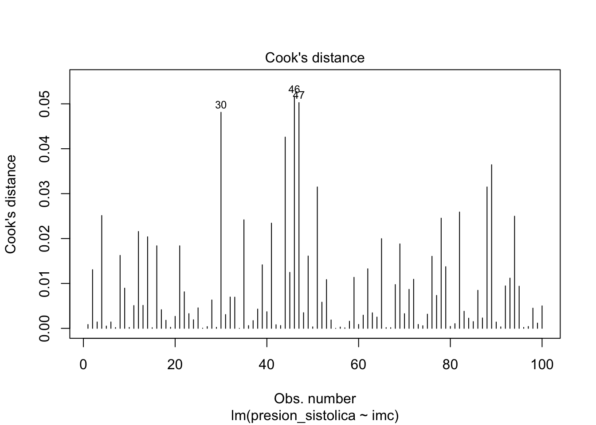
# índice de apalancamientoplot(modelo_simple, which =5)abline(h =2* (length(coef(modelo_simple)) /nrow(dat)), col ="red", lty =2)
# identificar los puntos influyentesinfluential_points <-which(cooks.distance(modelo_simple) >1|hatvalues(modelo_simple) >2* (length(coef(modelo_simple)) /nrow(dat)))influential_points
9 54 65 68 78
9 54 65 68 78
dat[influential_points, ]
presion_sistolica edad imc tabaquismo
9 124 56 16.0 No fumador
54 163 61 35.4 No fumador
65 143 64 21.4 No fumador
68 172 63 38.8 Fumador
78 116 45 19.9 No fumador
# Nuevo modelo con y sin los puntos influyentesmodelo_sin_influencers <-lm(presion_sistolica ~ imc, data = dat[-influential_points, ])summary(modelo_sin_influencers)
Call:
lm(formula = presion_sistolica ~ imc, data = dat[-influential_points,
])
Residuals:
Min 1Q Median 3Q Max
-31.270 -9.530 -2.014 9.306 30.782
Coefficients:
Estimate Std. Error t value Pr(>|t|)
(Intercept) 87.169 12.138 7.181 0.000000000167 ***
imc 2.034 0.431 4.721 0.000008283667 ***
---
Signif. codes: 0 '***' 0.001 '**' 0.01 '*' 0.05 '.' 0.1 ' ' 1
Residual standard error: 13.28 on 93 degrees of freedom
Multiple R-squared: 0.1933, Adjusted R-squared: 0.1846
F-statistic: 22.28 on 1 and 93 DF, p-value: 0.000008284
Consejo: Recuerdar las 4 primeras condiciones gracias al acrónimo en inglés “LINE”, de Linearity, Independence, Normality y Equality of variance (Linealidad, Independencia, Normalidad e Igualdad de varianza).
Si no se cumple alguna de las condiciones, las pruebas y las conclusiones podrían ser erróneas, por lo que es mejor evitar el uso e interpretación del modelo. Si este es el caso, a veces las condiciones se pueden cumplir transformando los datos (por ejemplo, transformación logarítmica, cuadrada o raíz cuadrada, transformación de Box-Cox, etc.) o añadiendo un término cuadrático o cúbico (o incluso un polinomio de orden superior) al modelo. Si no ayuda, podría valer la pena pensar en eliminar algunas variables o añadir otras, o incluso considerar otros tipos de modelos como los modelos no lineales.
Ten en cuenta que, en la práctica, las condiciones de aplicación deben verificarse antes de sacar cualquier conclusión basada en el modelo.
Hay numerosas formas de visualizar la relación entre las dos variables de interés, pero la más fácil que he encontrado hasta ahora es a través de la función visreg() del paquete del mismo nombre:
#install.packages("visreg") # instalar el paquete si no está ya instaladolibrary(visreg)visreg(modelo_simple, gg=TRUE) +labs(y ="Presión arterial sistólica (mmHg)",x ="Índice de Masa Corporal (IMC)" ) +theme_minimal()
Warning: `aes_string()` was deprecated in ggplot2 3.0.0.
ℹ Please use tidy evaluation idioms with `aes()`.
ℹ See also `vignette("ggplot2-in-packages")` for more information.
ℹ The deprecated feature was likely used in the visreg package.
Please report the issue at <https://github.com/pbreheny/visreg/issues>.
Warning: Using `size` aesthetic for lines was deprecated in ggplot2 3.4.0.
ℹ Please use `linewidth` instead.
ℹ The deprecated feature was likely used in the ggplot2 package.
Please report the issue at <https://github.com/tidyverse/ggplot2/issues>.
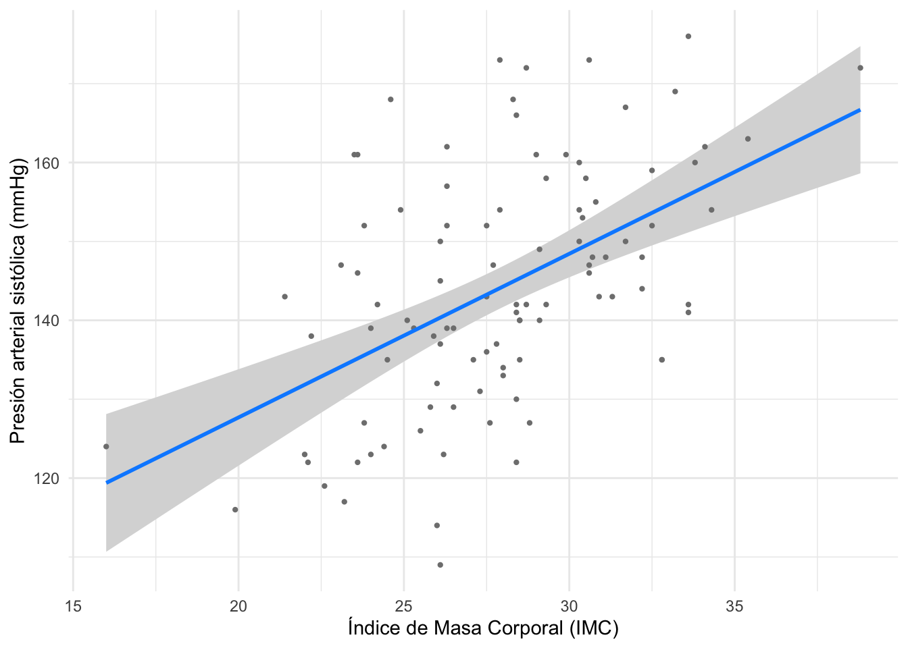
Se podrían mostrar otros elementos en el gráfico de regresión (por ejemplo, la ecuación de regresión y el \(R^2\)). Esto se puede hacer fácilmente con las funciones stat_regline_equation() y stat_cor() del paquete {ggpubr}:
# cargar las bibliotecas necesariaslibrary(ggpubr)# crear un gráfico con la línea de regresión, la ecuación de regresión y el R^2ggplot(dat, aes(x = imc, y = presion_sistolica)) +geom_smooth(method="lm") +geom_point() +stat_regline_equation(label.x=10, label.y=160) +# para la ecuación de regresiónstat_cor(aes(label=after_stat(rr.label)), label.x=10, label.y=170) +# para el R^2theme_minimal()
`geom_smooth()` using formula = 'y ~ x'
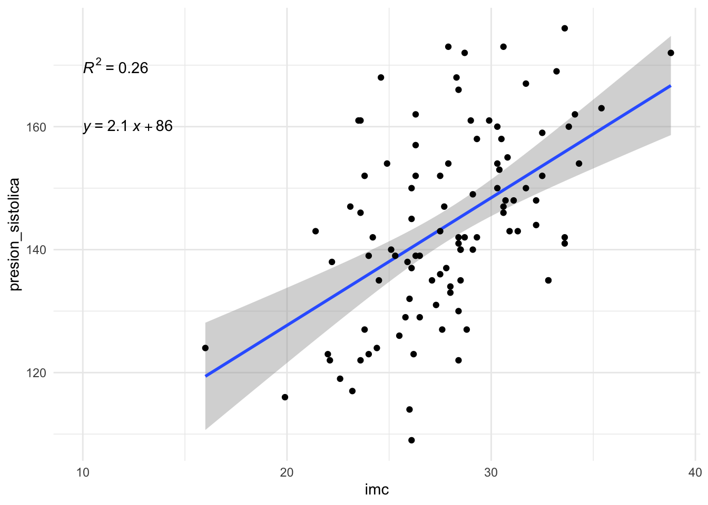
3.2 REGRESIÓN LINEAL MÚLTIPLE
3.2.1 El concepto de ajuste
La regresión lineal múltiple (RLM) es una generalización de la regresión lineal simple, en el sentido de que este enfoque permite relacionar una variable con varias variables a través de una función lineal en sus parámetros. La RLM se utiliza para evaluar la relación entre dos variables mientras se tiene en cuenta el efecto de otras variables, esto se conoce como un modelo ajustado dejando constante el efecto de las variables independientes. Al considerar el efecto de otras variables, cancelamos su influencia para aislar y medir la relación entre las dos variables de interés, en nuestro ejemplo presión arterial sistólica e IMC. Este punto es la principal diferencia con la regresión lineal simple.
Para ilustrar cómo realizar una regresión lineal múltiple en R, utilizamos el mismo conjunto de datos que para la regresión lineal simple (datos_pacientes). A continuación, un breve vistazo a los datos:
# Nota: Este código asume que el dataframe 'dat' y el 'modelo_simple' de la sección anterior ya están cargados.# 'modelo_simple' fue: modelo_simple <- lm(presion_sistolica ~ imc, data = dat)head(dat)
presion_sistolica edad imc tabaquismo
1 142 67 29.3 No fumador
2 154 67 24.9 No fumador
3 154 41 34.3 No fumador
4 173 63 30.6 No fumador
5 141 56 28.4 Fumador
6 140 51 29.1 Fumador
Hemos visto que existe una relación lineal significativa y positiva entre la presión arterial sistólica de un paciente y su IMC. Sin embargo, uno podría preguntarse si no existen en realidad otros factores que podrían explicar la presión arterial de un paciente. En medicina, es bien sabido que la edad y el tabaquismo también son factores de riesgo importantes. Para explorar esto, podemos visualizar la relación entre la presión arterial (presion_sistolica), el IMC (imc), la edad (edad) y el tabaquismo (tabaquismo):
ggplot(dat) +aes(x = imc, y = presion_sistolica, colour = edad, shape = tabaquismo) +geom_point(alpha =0.8, size =3) +scale_color_gradient(low ="blue", high ="red") +labs(y ="Presión arterial sistólica (mmHg)",x ="Índice de Masa Corporal (IMC)",color ="Edad",shape ="Tabaquismo") +theme_minimal()
Parece que, además de la relación positiva entre la presión sistólica y el IMC, también observamos que:
los puntos con colores más cálidos (indicando mayor edad) tienden a estar más arriba, sugiriendo una relación positiva con la edad.
podría haber una diferencia sistemática entre fumadores y no fumadores.
Por lo tanto, nos gustaría evaluar la relación entre la presión arterial y el IMC, pero esta vez añadiendo información sobre la edad y el tabaquismo del paciente. Al añadir esta información adicional, podemos capturar solo la relación directa entre la presión arterial y el IMC (el efecto indirecto debido a la edad y el tabaquismo se controla por el modelo). Este es el objetivo principal de la RLM. De hecho, en la RLM, la relación estimada entre la variable dependiente y una variable explicativa es una relación ajustada, es decir, libre de los efectos lineales de las otras variables explicativas.
Ilustremos esta noción de ajuste añadiendo la edad y el tabaquismo a nuestro modelo de regresión lineal:
Call:
lm(formula = presion_sistolica ~ imc + edad + tabaquismo, data = dat)
Residuals:
Min 1Q Median 3Q Max
-20.6886 -5.5994 -0.0534 5.1252 19.9078
Coefficients:
Estimate Std. Error t value Pr(>|t|)
(Intercept) 61.43331 7.17710 8.560 0.000000000000183 ***
imc 1.60879 0.22686 7.092 0.000000000224898 ***
edad 0.81471 0.06941 11.738 < 0.0000000000000002 ***
tabaquismoNo fumador -5.35646 1.82008 -2.943 0.00408 **
---
Signif. codes: 0 '***' 0.001 '**' 0.01 '*' 0.05 '.' 0.1 ' ' 1
Residual standard error: 8.247 on 96 degrees of freedom
Multiple R-squared: 0.7118, Adjusted R-squared: 0.7028
F-statistic: 79.03 on 3 and 96 DF, p-value: < 0.00000000000000022
Podemos ver que ahora, la relación entre la presión arterial y el IMC sigue siendo fuerte y positiva (\(\widehat\beta_1 = 1.61\)), y ahora podemos cuantificar los efectos de la edad y el tabaquismo de forma independiente. El efecto del IMC sobre la presión arterial fue ajustado según el efecto de la edad y el tabaquismo. Este es el efecto restante entre la presión arterial y el IMC después de que se hayan tenido en cuenta los efectos de las otras variables.
Los modelos de regresión lineal múltiple se definen por la ecuación:
\[Y = \beta_0 + \beta_1 X_1 + \beta_2 X_2 + \dots + \beta_p X_p + \epsilon\] Es similar a la ecuación de la regresión lineal simple, excepto que hay más de una variable independiente (\(X_1, X_2, \dots, X_p\)). La estimación de los parámetros \(\beta_0, \dots, \beta_p\) por el método de mínimos cuadrados se basa en el mismo principio que el de la regresión lineal simple, pero aplicado a \(p\) dimensiones. Ya no se trata de encontrar la mejor línea, sino de encontrar el hiperplano\(p\)-dimensional que pasa más cerca de los puntos de coordenadas (\(y_i, x_{i1}, \dots, x_{ip}\)).
Esto se hace minimizando la suma de los cuadrados de las desviaciones de los puntos al plano. En este gráfico podemos ver el concepto de hiperplano
3.2.2 Interpretación de los coeficientes
El método de mínimos cuadrados da como resultado una estimación ajustada de los coeficientes. El término “ajustado” significa después de tener en cuenta los efectos lineales de las otras variables independientes sobre la variable dependiente y sobre la variable predictora en cuestión.
En otras palabras, el coeficiente \(\beta_1\) corresponde a la pendiente de la relación entre \(Y\) y \(X_1\) cuando los efectos lineales de las otras variables explicativas (\(X_2, \dots, X_p\)) han sido eliminados.
Aplicado a nuestro modelo con IMC, edad y tabaquismo como variables independientes, tenemos:
summary(modelo_multiple)
Call:
lm(formula = presion_sistolica ~ imc + edad + tabaquismo, data = dat)
Residuals:
Min 1Q Median 3Q Max
-20.6886 -5.5994 -0.0534 5.1252 19.9078
Coefficients:
Estimate Std. Error t value Pr(>|t|)
(Intercept) 61.43331 7.17710 8.560 0.000000000000183 ***
imc 1.60879 0.22686 7.092 0.000000000224898 ***
edad 0.81471 0.06941 11.738 < 0.0000000000000002 ***
tabaquismoNo fumador -5.35646 1.82008 -2.943 0.00408 **
---
Signif. codes: 0 '***' 0.001 '**' 0.01 '*' 0.05 '.' 0.1 ' ' 1
Residual standard error: 8.247 on 96 degrees of freedom
Multiple R-squared: 0.7118, Adjusted R-squared: 0.7028
F-statistic: 79.03 on 3 and 96 DF, p-value: < 0.00000000000000022
La tabla Coefficients nos da la estimación para cada parámetro (columna Estimate), junto con el p-valor de su significancia (columna Pr(>|t|)).
Las hipótesis son las mismas que para la regresión simple:
\(H_0 : \beta_j = 0\)
\(H_1 : \beta_j \ne 0\)
Probar si \(\beta_j = 0\) es equivalente a probar la hipótesis: ¿está la variable dependiente asociada con la variable independiente estudiada, manteniendo todo lo demás constante?
En otras palabras:
La prueba para imc corresponde a: ¿está la presión arterial asociada con el IMC, a un nivel constante de edad y tabaquismo?
La prueba para edad corresponde a: ¿está la presión arterial asociada con la edad, a un nivel constante de IMC y tabaquismo?
La prueba para tabaquismo corresponde a: ¿está la presión arterial asociada con el tabaquismo, a un nivel constante de IMC y edad?
Basándonos en el resultado de nuestro modelo, concluimos que:
Existe una relación significativa y positiva entre la presión sistólica y el IMC, manteniendo todo lo demás constante. Por cada aumento de 1 kg/\(m^2\) en el IMC, la presión sistólica aumenta, en promedio, en 1.61 mmHg, para un nivel constante de edad y tabaquismo (p-valor < 0.001).
Existe una relación significativa y positiva entre la presión sistólica y la edad, manteniendo todo lo demás constante. Por cada año adicional de edad, la presión sistólica aumenta, en promedio, 0.81 mmHg, para un nivel constante de IMC y tabaquismo (p-valor < 0.001).
La presión arterial de un fumador es, en promedio, 5.35 mmHg más alta que la de un no fumador, manteniendo constantes el IMC y la edad. Esta diferencia es estadísticamente significativa (p-valor = 0.004).
3.2.3 Condiciones de aplicación
Al igual que en la regresión simple, la regresión múltiple requiere que se cumplan ciertas condiciones para que el modelo sea válido. Las condiciones son en gran medida las mismas:
Linealidad de las relaciones entre la variable dependiente y las independientes.
Independencia de las observaciones (los datos de un paciente no influyen en los de otro).
Normalidad de los residuos.
Homocedasticidad (igualdad de varianza) de los residuos.
Ausencia de puntos influyentes (valores atípicos que distorsionen el modelo).
Pero hay una condición adicional para la regresión múltiple:
Ausencia de multicolinealidad: La multicolinealidad ocurre cuando hay una fuerte correlación lineal entre las variables independientes. Es importante verificarla porque puede desestabilizar las estimaciones de los coeficientes. Se puede evaluar calculando el Factor de Inflación de la Varianza (VIF). Un VIF superior a 5 o 10 suele considerarse problemático [3].
Usaremos la función check_model() del paquete {performance} para verificar todas estas condiciones de manera elegante y eficiente.
Este p-valor se encuentra en la última línea del summary():
summary(modelo_multiple)
Call:
lm(formula = presion_sistolica ~ imc + edad + tabaquismo, data = dat)
Residuals:
Min 1Q Median 3Q Max
-20.6886 -5.5994 -0.0534 5.1252 19.9078
Coefficients:
Estimate Std. Error t value Pr(>|t|)
(Intercept) 61.43331 7.17710 8.560 0.000000000000183 ***
imc 1.60879 0.22686 7.092 0.000000000224898 ***
edad 0.81471 0.06941 11.738 < 0.0000000000000002 ***
tabaquismoNo fumador -5.35646 1.82008 -2.943 0.00408 **
---
Signif. codes: 0 '***' 0.001 '**' 0.01 '*' 0.05 '.' 0.1 ' ' 1
Residual standard error: 8.247 on 96 degrees of freedom
Multiple R-squared: 0.7118, Adjusted R-squared: 0.7028
F-statistic: 79.03 on 3 and 96 DF, p-value: < 0.00000000000000022
El p-value: < 2.2e-16 es extremadamente pequeño. Rechazamos la hipótesis nula y concluimos que nuestro modelo es significativamente mejor que nada, ya que al menos uno de nuestros predictores (IMC, edad o tabaquismo) es útil para explicar la presión arterial.
3.2.4.2 Coeficiente de determinación R2
El \(R^2\) mide la proporción de la variabilidad de la variable dependiente que es explicada por el modelo. Su formula es: \[R^2 = 1 - \frac{\text{Suma de cuadrados de los residuos}}{\text{Suma total de cuadrados}}\] Donde: - La Suma de cuadrados de los residuos mide la variabilidad no explicada por el modelo. - La Suma total de cuadrados mide la variabilidad total de la variable dependiente.
Las formulas de estas sumas de cuadrados son:
\[\text{Suma de cuadrados de los residuos} = \sum_{i=1}^{n} (y_i - \hat{y}_i)^2\]
donde \(y_i\) son los valores observados y \(\hat{y}_i\) son los valores predichos por el modelo.
\[\text{Suma total de cuadrados} = \sum_{i=1}^{n} (y_i - \bar{y})^2\] donde \(\bar{y}\) es la media de los valores observados.
En R, el \(R^2\) se muestra en el summary() del modelo:
summary(modelo_multiple)
Call:
lm(formula = presion_sistolica ~ imc + edad + tabaquismo, data = dat)
Residuals:
Min 1Q Median 3Q Max
-20.6886 -5.5994 -0.0534 5.1252 19.9078
Coefficients:
Estimate Std. Error t value Pr(>|t|)
(Intercept) 61.43331 7.17710 8.560 0.000000000000183 ***
imc 1.60879 0.22686 7.092 0.000000000224898 ***
edad 0.81471 0.06941 11.738 < 0.0000000000000002 ***
tabaquismoNo fumador -5.35646 1.82008 -2.943 0.00408 **
---
Signif. codes: 0 '***' 0.001 '**' 0.01 '*' 0.05 '.' 0.1 ' ' 1
Residual standard error: 8.247 on 96 degrees of freedom
Multiple R-squared: 0.7118, Adjusted R-squared: 0.7028
F-statistic: 79.03 on 3 and 96 DF, p-value: < 0.00000000000000022
En nuestro caso, el \(R^2\) es 0.7118, pero el \(R^2\) ajustado es preferible en regresión múltiple porque penaliza la adición de variables innecesarias y su valor es 0.7028. Esto se interpreta como que aproximadamente el 70% de la variabilidad en la presión arterial sistólica de los pacientes es explicada por el IMC, la edad y el tabaquismo. Este es un poder explicativo bastante alto para un modelo biomédico.
3.2.4.3 Parsimonia (Criterio de Información de Akaike - AIC)
Generalmente, se prefiere un modelo parsimonioso (con menos variables) a uno complejo, siempre que explique bien los datos. El AIC es un criterio que equilibra la bondad de ajuste con la complejidad del modelo. El mejor modelo es el que tiene el AIC más bajo. Podemos usar un procedimiento “paso a paso” (stepwise) para que R encuentre automáticamente el modelo con el mejor AIC, partiendo de un modelo con todas las variables candidatas.
# En nuestro caso, el modelo ya es bastante simple, pero así se haría:modelo_completo <-lm(presion_sistolica ~ imc + edad + tabaquismo, data = dat)modelo_seleccionado <-step(modelo_completo, trace =FALSE)summary(modelo_seleccionado)
Call:
lm(formula = presion_sistolica ~ imc + edad + tabaquismo, data = dat)
Residuals:
Min 1Q Median 3Q Max
-20.6886 -5.5994 -0.0534 5.1252 19.9078
Coefficients:
Estimate Std. Error t value Pr(>|t|)
(Intercept) 61.43331 7.17710 8.560 0.000000000000183 ***
imc 1.60879 0.22686 7.092 0.000000000224898 ***
edad 0.81471 0.06941 11.738 < 0.0000000000000002 ***
tabaquismoNo fumador -5.35646 1.82008 -2.943 0.00408 **
---
Signif. codes: 0 '***' 0.001 '**' 0.01 '*' 0.05 '.' 0.1 ' ' 1
Residual standard error: 8.247 on 96 degrees of freedom
Multiple R-squared: 0.7118, Adjusted R-squared: 0.7028
F-statistic: 79.03 on 3 and 96 DF, p-value: < 0.00000000000000022
En este caso, el procedimiento step() mantuvo todas nuestras variables (IMC, edad y tabaquismo), confirmando que todas son importantes para el modelo y que no hay necesidad de simplificarlo más.
3.2.5 Visualizaciones del modelo
Hay muchas formas de visualizar los resultados de una regresión. Aquí hay tres opciones populares:
visreg(): Muestra la relación ajustada para cada variable predictora, manteniendo las otras constantes.
library(visreg)# Mostramos el efecto del IMC ajustado por edad y tabaquismovisreg(modelo_multiple, "imc", gg =TRUE) +theme_minimal()
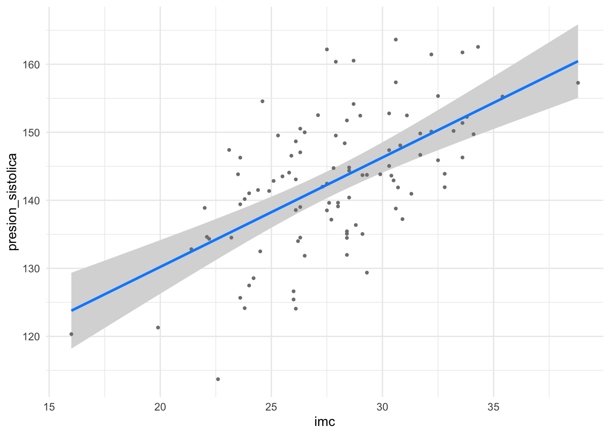
# Mostramos el efecto de la edad ajustado por IMC y tabaquismovisreg(modelo_multiple, "edad", gg =TRUE) +theme_minimal()
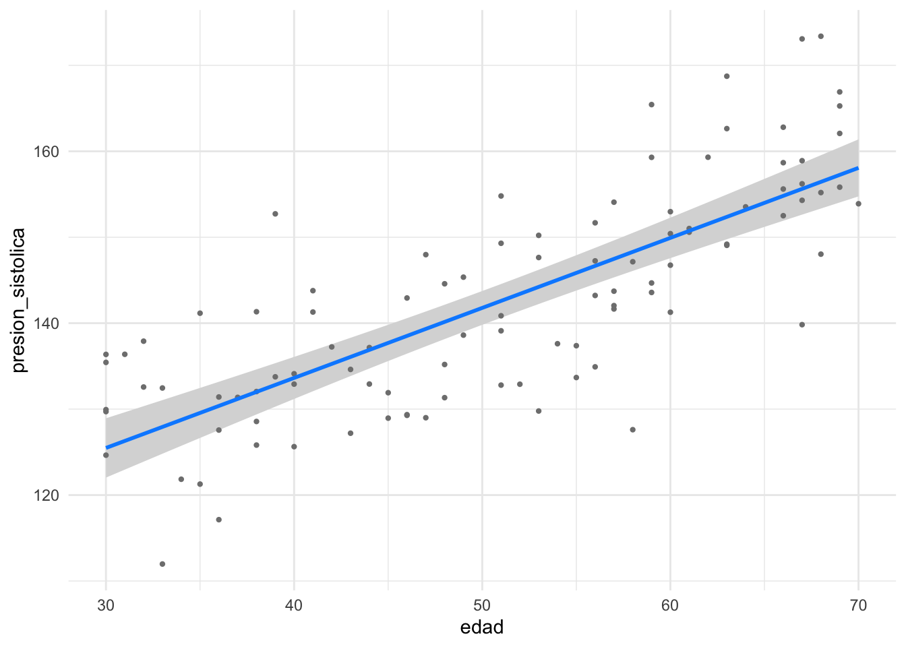
ggcoefstats() del paquete {ggstatsplot}: Crea un gráfico de coeficientes (llamado “diagrama de bosque” o forest plot) que resume los resultados del modelo de forma visual.
#install.packages("ggstatsplot") # instalar el paquete si no está ya instaladolibrary(ggstatsplot)ggcoefstats(modelo_multiple)
En este gráfico:
La línea vertical discontinua está en el cero. Si el intervalo de confianza de un coeficiente (la línea horizontal) no cruza esta línea, el coeficiente es estadísticamente significativo.
Un punto a la derecha (izquierda) del cero indica una relación positiva (negativa).
Cuanto más lejos del cero esté el punto, más fuerte es el efecto.
plot_summs() del paquete {jtools}: Similar al anterior, pero más conciso y excelente para comparar múltiples modelos.
library(jtools)library(ggstance)
Attaching package: 'ggstance'
The following objects are masked from 'package:ggplot2':
geom_errorbarh, GeomErrorbarh
plot_summs(modelo_multiple, omit.coefs =NULL)
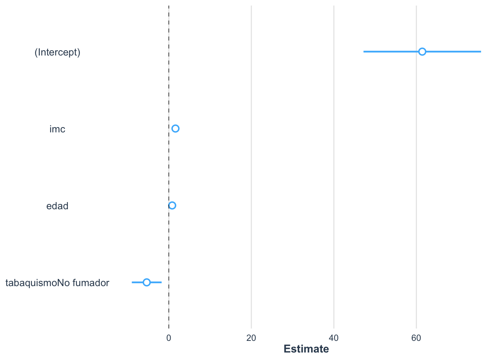
Este gráfico es similar al anterior, pero más compacto. Nuevamente, los coeficientes significativos son aquellos cuyos intervalos de confianza no cruzan el cero.
Claro, aquí tienes la traducción y adaptación del texto al contexto médico de la presión arterial.
3.2.6 Como presentar los resultados del modelo
Gracias a la función model_parameters() del paquete {parameters}, puedes imprimir un resumen del modelo en un formato agradable para que el resultado sea más legible.
# Nota: Usamos el 'modelo_multiple' que creamos en la sección anterior.#install.packages("parameters") # instalar el paquete si no está ya instaladolibrary(parameters)model_parameters(modelo_multiple, summary =TRUE)
Y si estás usando R Markdown, puedes usar la función print_html() para obtener una tabla de resumen compacta pero completa en tu archivo HTML.
#install.packages("gt") # instalar el paquete si no está ya instaladolibrary(gt)print_html(model_parameters(modelo_multiple, summary =TRUE))
Parameter
Coefficient
SE
95% CI
t(96)
p
(Intercept)
61.43
7.18
(47.19, 75.68)
8.56
< .001
imc
1.61
0.23
(1.16, 2.06)
7.09
< .001
edad
0.81
0.07
(0.68, 0.95)
11.74
< .001
tabaquismo (No fumador)
-5.36
1.82
(-8.97, -1.74)
-2.94
0.004
La función report() del paquete del mismo nombre permite producir automáticamente informes de modelos de acuerdo con las directrices de buenas prácticas.
#install.packages("report") # instalar el paquete si no está ya instaladolibrary(report)report(modelo_multiple)
We fitted a linear model (estimated using OLS) to predict presion_sistolica
with imc, edad and tabaquismo (formula: presion_sistolica ~ imc + edad +
tabaquismo). The model explains a statistically significant and substantial
proportion of variance (R2 = 0.71, F(3, 96) = 79.03, p < .001, adj. R2 = 0.70).
The model's intercept, corresponding to imc = 0, edad = 0 and tabaquismo =
Fumador, is at 61.43 (95% CI [47.19, 75.68], t(96) = 8.56, p < .001). Within
this model:
- The effect of imc is statistically significant and positive (beta = 1.61, 95%
CI [1.16, 2.06], t(96) = 7.09, p < .001; Std. beta = 0.40, 95% CI [0.29, 0.51])
- The effect of edad is statistically significant and positive (beta = 0.81,
95% CI [0.68, 0.95], t(96) = 11.74, p < .001; Std. beta = 0.65, 95% CI [0.54,
0.76])
- The effect of tabaquismo [No fumador] is statistically significant and
negative (beta = -5.36, 95% CI [-8.97, -1.74], t(96) = -2.94, p = 0.004; Std.
beta = -0.35, 95% CI [-0.59, -0.12])
Standardized parameters were obtained by fitting the model on a standardized
version of the dataset. 95% Confidence Intervals (CIs) and p-values were
computed using a Wald t-distribution approximation.
3.2.7 Predicciones
La regresión lineal se utiliza muy a menudo con fines predictivos. Los intervalos de confianza y de predicción para nuevos datos se pueden calcular con la función predict(). Supongamos que queremos predecir la presión arterial sistólica para un nuevo paciente de 55 años, no fumador, con un IMC de 30:
# creamos el dataframe para el nuevo pacientenuevo_paciente <-data.frame(imc =30,edad =55,tabaquismo ="No fumador")# intervalo de confianza para los nuevos datospredict(modelo_multiple,newdata = nuevo_paciente,interval ="confidence",level = .95)
fit lwr upr
1 149.1495 146.8579 151.4411
Según nuestro modelo, se espera que este paciente tenga una presión arterial sistólica de 149.1 mmHg. La diferencia entre el intervalo de confianza y el de predicción es que: - un intervalo de confianza da el valor predicho para la media de la presión arterial de todos los pacientes con estas características. - un intervalo de predicción da el rango probable para el valor de un individuo específico con estas características.
Por lo tanto, el intervalo de predicción es más amplio que el de confianza para tener en cuenta la incertidumbre adicional de predecir una respuesta individual en lugar de una media.
Las formulas para calcular estos intervalos se basan en la distribución t de Student y se pueden encontrar en cualquier libro de estadística sobre regresión lineal (por ejemplo, [4], sección 3.2.4).
En concreto estas son: - Intervalo de confianza para la media predicha por el modelo: \[\hat{y} \pm t_{\alpha/2, n-p-1} \cdot s \cdot \sqrt{\frac{1}{n} + \frac{(x_h - \bar{x})^2}{\sum_{i=1}^{n}(x_i - \bar{x})^2}}\] - Intervalo de predicción para una nueva observación: \[\hat{y} \pm t_{\alpha/2, n-p-1} \cdot s \cdot \sqrt{1 + \frac{1}{n} + \frac{(x_h - \bar{x})^2}{\sum_{i=1}^{n}(x_i - \bar{x})^2}}\] donde: - \(\hat{y}\) es la predicción puntual, - \(t_{\alpha/2, n-p-1}\) es el valor crítico de la distribución t de Student con \(n-p-1\) grados de libertad, - \(s\) es el error estándar de la estimación, - \(n\) es el número de observaciones en el conjunto de datos, - \(p\) es el número de predictores en el modelo, - \(x_h\) es el valor del predictor para el cual se realiza la predicción, - \(\bar{x}\) es la media de los valores del predictor en el conjunto de datos, - \(x_i\) son los valores individuales del predictor en el conjunto de datos.
3.2.8 Pruebas de hipótesis lineales
Las pruebas de hipótesis lineales permiten generalizar la prueba F y ofrecen la posibilidad de realizar pruebas de comparación de coeficientes o de igualdad de combinaciones lineales de coeficientes. Por ejemplo, para probar la restricción lineal de que los coeficientes de IMC y edad son simultáneamente cero:
\(H_0: \beta_{imc} = \beta_{edad} = 0\)
\(H_1:\) no \(H_0\)
Usamos la función linearHypothesis() del paquete {car}:
Linear hypothesis test:
imc = 0
edad = 0
Model 1: restricted model
Model 2: presion_sistolica ~ imc + edad + tabaquismo
Res.Df RSS Df Sum of Sq F Pr(>F)
1 98 21085.0
2 96 6529.5 2 14556 107 < 0.00000000000000022 ***
---
Signif. codes: 0 '***' 0.001 '**' 0.01 '*' 0.05 '.' 0.1 ' ' 1
Rechazamos la hipótesis nula y concluimos que al menos uno de los coeficientes (\(\beta_{imc}\) o \(\beta_{edad}\)) es diferente de 0 (p-valor < 2.2e-16).
3.2.9 Efecto global de las variables categóricas
Cuando una variable independiente categórica tiene \(k\) categorías, la tabla de regresión proporciona \(k-1\)p-valores. En nuestro modelo, tabaquismo solo tiene 2 niveles, por lo que su p-valor ya representa su efecto global. Pero, ¿qué pasaría si tuviéramos una variable con más de 2 niveles, como un nivel_actividad_fisica (“Bajo”, “Moderado”, “Alto”)? Para obtener un único p-valor que nos diga si la actividad física en general es un predictor significativo, necesitamos una tabla de análisis de varianza (ANOVA).
Veamos un ejemplo hipotético:
# Añadimos una variable categórica hipotética al datasetset.seed(123)dat$actividad_fisica <-factor(sample(c("Bajo", "Moderado", "Alto"), 100, replace =TRUE))# Creamos un nuevo modelomodelo_actividad <-lm(presion_sistolica ~ imc + edad + actividad_fisica, data = dat)# Usamos la función Anova() del paquete {car}Anova(modelo_actividad)
En esta tabla ANOVA, ahora tendríamos una sola fila para actividad_fisica con un único p-valor, que nos indicaría si la variable en su conjunto es significativa para predecir la presión arterial. Pero ahora queremos interpretar los valores de los coeficientes para cada uno de los nivels de actividad física:
summary(modelo_actividad)
Call:
lm(formula = presion_sistolica ~ imc + edad + actividad_fisica,
data = dat)
Residuals:
Min 1Q Median 3Q Max
-19.8987 -6.3074 0.2153 5.3885 18.6074
Coefficients:
Estimate Std. Error t value Pr(>|t|)
(Intercept) 55.78113 7.05763 7.904 0.0000000000048 ***
imc 1.60934 0.23776 6.769 0.0000000010666 ***
edad 0.80597 0.07195 11.202 < 0.0000000000000002 ***
actividad_fisicaBajo 3.31391 2.13689 1.551 0.1243
actividad_fisicaModerado 3.87089 2.11120 1.834 0.0699 .
---
Signif. codes: 0 '***' 0.001 '**' 0.01 '*' 0.05 '.' 0.1 ' ' 1
Residual standard error: 8.484 on 95 degrees of freedom
Multiple R-squared: 0.6981, Adjusted R-squared: 0.6854
F-statistic: 54.93 on 4 and 95 DF, p-value: < 0.00000000000000022
Aquí, los coeficientes para actividad_fisicaModerado y actividad_fisicaAlto nos indican la diferencia en la presión arterial en comparación con el grupo de referencia actividad_fisicaBajo. Si ambos coeficientes son significativos, podemos concluir que tanto el nivel moderado como el alto de actividad física tienen un efecto significativo en la presión arterial en comparación con el nivel bajo. Lo que hemos introducido es el concepto de varialbe dummy y contraste de tipo tratamiento donde el nivel más bajo de la variable categórica es seleccionado como referencia. Este tipo de contraste es el más comúnmente utilizado en los modelos de regresión. La variable dummy convierte una variable categórica en múltiples variables binarias (0/1) para cada nivel, excepto el nivel de referencia. Cada coeficiente asociado a estas variables binarias representa la diferencia en la respuesta (presión arterial) entre ese nivel y el nivel de referencia, manteniendo constantes las otras variables en el modelo.
# Visualización del efecto de la actividad físicavisreg(modelo_actividad, "actividad_fisica", gg =TRUE) +theme_minimal()
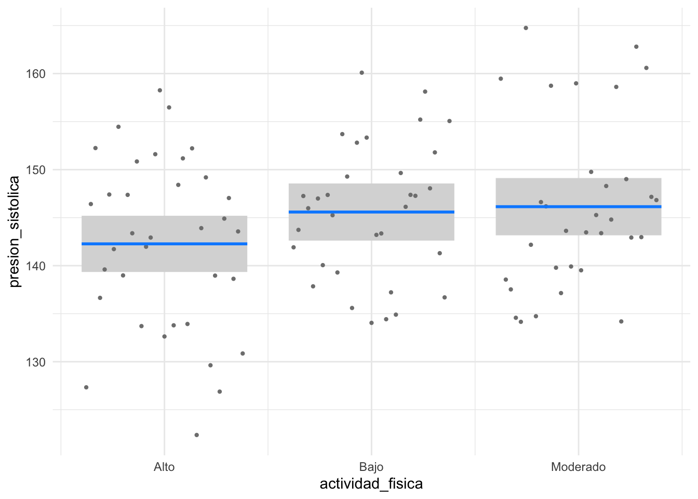
3.2.10 Interacciones
Hasta ahora hemos cubierto la regresión lineal múltiple sin ninguna interacción. Existe un efecto de interacción entre los factores A y B si el efecto del factor A sobre la respuesta depende del nivel que tome el factor B. Por ejemplo, ¿podría ser que el efecto del IMC sobre la presión arterial sea diferente para fumadores y no fumadores? Podríamos hipotetizar que el efecto del IMC es peor (más pronunciado) en fumadores. Esto es una interacción.
En R, la interacción se añade con * o ::
# Modelo con interacción entre IMC y Tabaquismo, ajustado por edadmodelo_interaccion <-lm(presion_sistolica ~ imc * tabaquismo + edad,data = dat)summary(modelo_interaccion)
Call:
lm(formula = presion_sistolica ~ imc * tabaquismo + edad, data = dat)
Residuals:
Min 1Q Median 3Q Max
-19.5186 -5.9523 -0.1141 5.0251 19.8884
Coefficients:
Estimate Std. Error t value Pr(>|t|)
(Intercept) 80.69191 13.03579 6.190 0.0000000152 ***
imc 0.94301 0.43955 2.145 0.0345 *
tabaquismoNo fumador -30.84996 14.58376 -2.115 0.0370 *
edad 0.81182 0.06868 11.821 < 0.0000000000000002 ***
imc:tabaquismoNo fumador 0.89730 0.50938 1.762 0.0814 .
---
Signif. codes: 0 '***' 0.001 '**' 0.01 '*' 0.05 '.' 0.1 ' ' 1
Residual standard error: 8.158 on 95 degrees of freedom
Multiple R-squared: 0.7209, Adjusted R-squared: 0.7092
F-statistic: 61.35 on 4 and 95 DF, p-value: < 0.00000000000000022
El término imc:tabaquismoFumador representa la interacción. Si su p-valor fuera significativo (en este caso, no lo es con p=0.08), concluiríamos que existe una interacción. Esto significaría que la pendiente que relaciona el IMC con la presión arterial depende de si una persona fuma o no. La forma más fácil de interpretar una interacción es visualizarla:
visreg(modelo_interaccion, "imc", by ="tabaquismo", gg =TRUE) +theme_minimal()
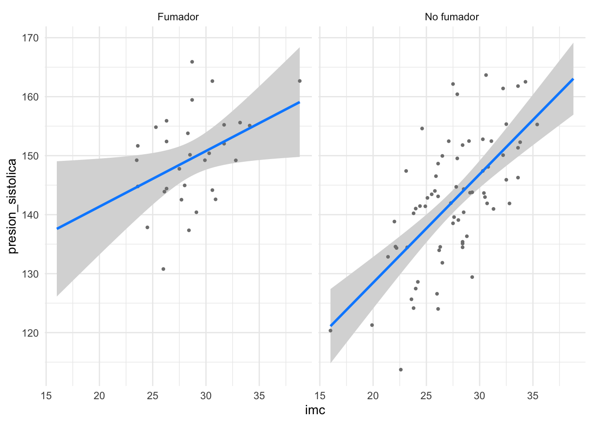
El gráfico muestra las dos líneas de regresión (una para fumadores, otra para no fumadores). Si hay una interacción significativa, estas líneas tendrán pendientes notablemente diferentes. En nuestro caso, son casi paralelas, lo que concuerda con la falta de significancia estadística de la interacción. Este es un buen ejemplo para ilustrar que, al estudiar una relación, es importante considerar cómo otras variables pueden modificar dicha relación. Omitir interacciones importantes puede llevar a conclusiones erróneas.
3.2.11 Multicolinealidad: VIF
La multicolinealidad ocurre cuando dos o más variables independientes están altamente correlacionadas entre sí. Esto puede causar problemas en la estimación de los coeficientes del modelo, ya que dificulta la separación de los efectos individuales de cada variable. Para evaluar la multicolinealidad, podemos calcular el Factor de Inflación de la Varianza (VIF) para cada variable independiente. Un VIF alto indica que una variable está altamente correlacionada con las demás.
# Interpretación de VIFif(any(vif_values >5)){print("Hay multicolinealidad significativa entre las variables independientes.")} else {print("No hay multicolinealidad significativa entre las variables independientes.")}
[1] "No hay multicolinealidad significativa entre las variables independientes."
3.2.12 Validación del modelo via cross-validation
La validación cruzada es una técnica utilizada para evaluar la capacidad predictiva de un modelo. Consiste en dividir el conjunto de datos en varios subconjuntos (o “folds”), entrenar el modelo en algunos de estos subconjuntos y luego probarlo en los restantes. Esto ayuda a estimar cómo se desempeñará el modelo en datos no vistos.
# install.packages("caret") # instalar el paquete si no está ya instaladolibrary(caret)set.seed(123)# Definir el control de entrenamiento para 10-fold cross-validationtrain_control <-trainControl(method ="cv", number =10)# Entrenar el modelo usando cross-validationmodelo_cv <-train(presion_sistolica ~ imc + edad + tabaquismo,data = dat,method ="lm",trControl = train_control)# Resultados de la validación cruzadamodelo_cv
Linear Regression
100 samples
3 predictor
No pre-processing
Resampling: Cross-Validated (10 fold)
Summary of sample sizes: 89, 89, 91, 91, 91, 90, ...
Resampling results:
RMSE Rsquared MAE
8.359981 0.7483465 6.828316
Tuning parameter 'intercept' was held constant at a value of TRUE
# Obtener el RMSE promedio de la validación cruzadamean(modelo_cv$resample$RMSE)
[1] 8.359981
El resultado muestra el rendimiento del modelo en términos de RMSE (Root Mean Squared Error) promedio a través de los 10 folds. Un RMSE más bajo indica un mejor desempeño predictivo del modelo. Esta técnica es especialmente útil para evitar el sobreajuste y asegurar que el modelo generalice bien a nuevos datos. También podemos comparar el desempeño de diferentes modelos en base a la especificación del mismo. Por ejemplo comparemos el RMSE de un modelo con el efecto cuadrático del IMC frente a un modelo lineal simple.
# Modelo con efecto cuadrático del IMCmodelo_cuadratico <-train(presion_sistolica ~poly(imc, 2) + edad + tabaquismo,data = dat,method ="lm",trControl = train_control)# Resultados de la validación cruzada para el modelo cuadráticomodelo_cuadratico
Linear Regression
100 samples
3 predictor
No pre-processing
Resampling: Cross-Validated (10 fold)
Summary of sample sizes: 90, 90, 91, 89, 90, 90, ...
Resampling results:
RMSE Rsquared MAE
8.335399 0.7085369 6.821517
Tuning parameter 'intercept' was held constant at a value of TRUE
# Obtener el RMSE promedio de la validación cruzada para el modelo cuadráticomean(modelo_cuadratico$resample$RMSE)
[1] 8.335399
Concluimos que el modelo con el efecto cuadrático del IMC tiene un RMSE más bajo que el modelo lineal simple, lo que sugiere que el modelo cuadrático tiene un mejor desempeño predictivo para este conjunto de datos.
Referencias
1.
Ernst AF, Albers CJ. Regression assumptions in clinical psychology research practice: A systematic review of common misconceptions. PeerJ. 2017;5:e3323.
2.
Lumley T, Diehr P, Emerson S, Chen L. The importance of the normality assumption in large public health data sets. Annual review of public health. 2002;23(1):151–69.
3.
Belsley DA, Kuh E, Welsch RE. Regression diagnostics: Identifying influential data and sources of collinearity. New York: John Wiley & Sons; 1980.
4.
Kutner MH, Nachtsheim CJ, Neter J, Li W. Applied linear statistical models. 5th ed. Boston: McGraw-Hill/Irwin; 2005.